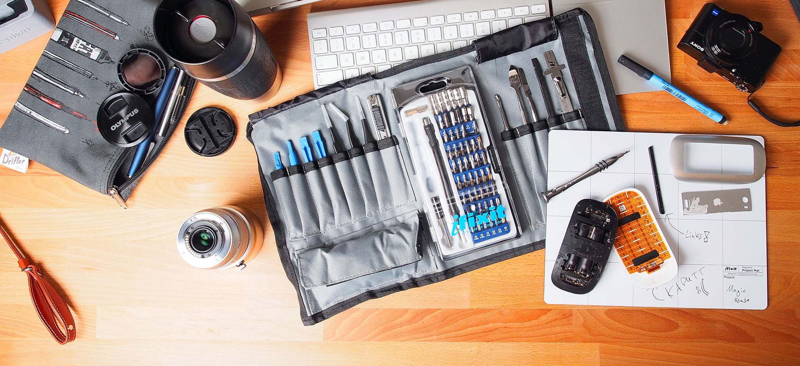
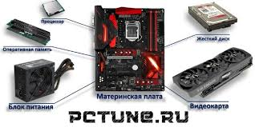
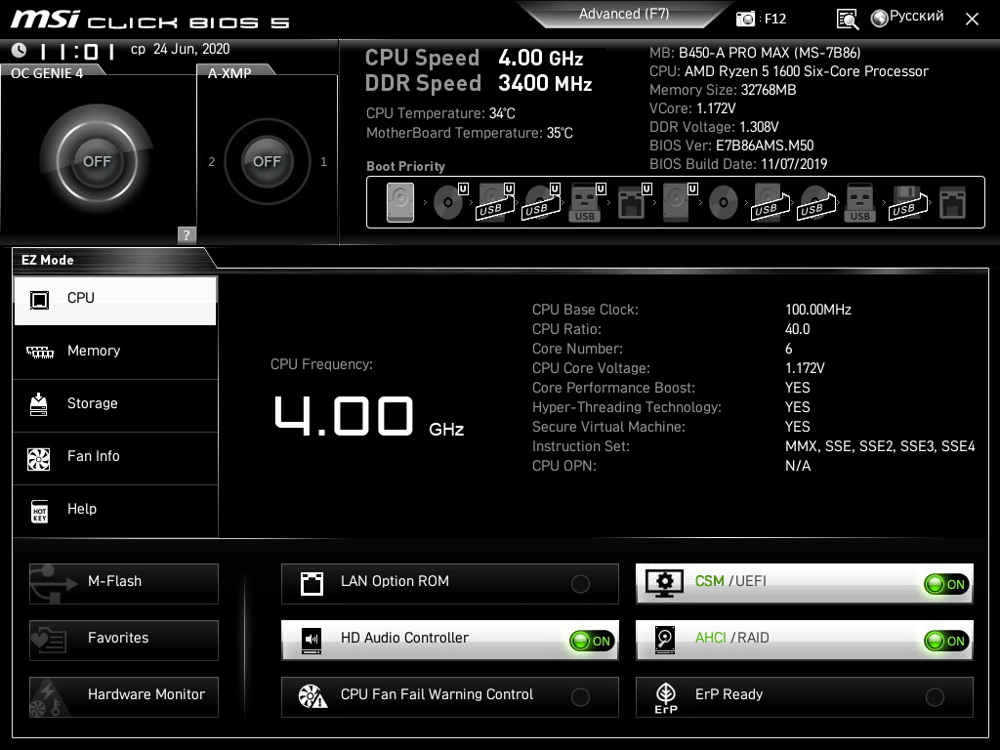

Сборка собственного ПК — это не только способ сэкономить деньги, но и возможность создать машину, идеально подходящую для твоих задач: игр, работы или творчества. В этом гайде мы разберём всё по полочкам — от подготовки инструментов до устранения ошибок. Поехали!
Инструменты
Для сборки ПК тебе понадобится минимальный набор инструментов, но важно, чтобы всё было под рукой:
Крестовая отвёртка (Phillips) — стандартный размер PH2 подойдёт для большинства винтов в корпусе и на плате.
Антистатический браслет — защита от статического электричества, которое может повредить чипы (альтернатива — заземление через корпус).
Термопаста — нужна, если на кулере нет преднанесённого слоя; выбирай качественную, например, Arctic MX-4.
Кабельные стяжки — для аккуратной укладки проводов внутри корпуса.
Маленький фонарик — поможет разглядеть мелкие разъёмы в тёмных уголках корпуса.

Комплектующие
Выбор железа — ключевой этап. Вот что тебе нужно и на что обратить внимание:
Процессор (CPU) — Intel i5/i7 или AMD Ryzen 5/7 для баланса цены и производительности. Убедись, что сокет совпадает с материнской платой.
Материнская плата — подбирай под чипсет (например, B550 для Ryzen) и с нужными слотами (PCIe 4.0, M.2).
Оперативная память (RAM) — 16 ГБ (2x8 ГБ) с частотой 3200 МГц — оптимально для 2025 года.
Видеокарта (GPU) — NVIDIA RTX 3060/4060 или AMD RX 6700 XT для игр в 1080p/1440p.
Блок питания (PSU) — 550-750 Вт, 80+ Bronze или Gold, чтобы был запас мощности.
Корпус — с хорошей вентиляцией (mesh-панель спереди) и поддержкой кабель-менеджмента.
Накопители — SSD NVMe (500 ГБ-1 ТБ) для ОС и игр + HDD (2-4 ТБ) для хранения данных.

Процесс сборки
Подробные шаги
Собирать ПК лучше в таком порядке, чтобы ничего не повредить:
Установка CPU — аккуратно вставь процессор в сокет, ориентируясь по метке (треугольник в углу), не дави сильно.
Кулер — нанеси термопасту размером с горошину, закрепи кулер (стоковый или башенный) по инструкции.
RAM — вставь модули в слоты (обычно 2 и 4), до щелчка, проверь совместимость в мануале платы.
Материнка в корпус — закрепи плату на стойки (обычно 6-9 винтов), не перетягивай.
Питание — подключи 24-pin к плате и 8-pin к CPU, уложи кабели аккуратно.
GPU и накопители — вставь видеокарту в PCIe-слот, закрепи винтом; SSD/HDD установи в отсеки.
Финал — подключи переднюю панель (power, reset, LED), USB и аудиоразъёмы, закрой корпус.
Ошибки после сборки
Частые проблемы и как их решить
После сборки могут возникнуть проблемы. Вот что делать:
ПК не включается — проверь кабель питания, переключатель на БП, подключение кнопки power к материнке (см. мануал).
Нет изображения — убедись, что кабель монитора в GPU, а не в плате; проверь плотность установки GPU и RAM.
Синий экран (BSOD) — обнови BIOS с сайта производителя платы, проверь частоту RAM в BIOS (XMP).
Перегрев — убедись, что кулер вращается (подключи к CPU_FAN), проверь температуру в BIOS (выше 90°C — плохо).
Нет звука — проверь драйверы (Realtek или производителя платы), убедись, что колонки в нужном разъёме.
Не грузится ОС — проверь порядок загрузки в BIOS, убедись, что флешка с ОС записана правильно (Rufus).

Настройка
После сборки нужно настроить систему для работы:
BIOS — включи ПК, нажми Del/F2, выставь порядок загрузки (флешка первая), включи XMP для RAM.
Установка ОС — вставь флешку с Windows 10/11 (запиши через Rufus), следуй инструкциям установщика.
Драйверы — скачай с сайта производителя GPU (NVIDIA/AMD), чипсета (AMD/Intel) и аудио; обнови через GeForce Experience или Adrenalin.
Программы — установи HWMonitor для мониторинга температур, MSI Afterburner для разгона GPU (опционально).